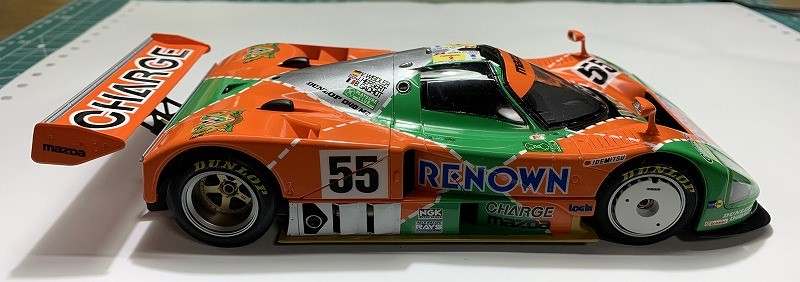
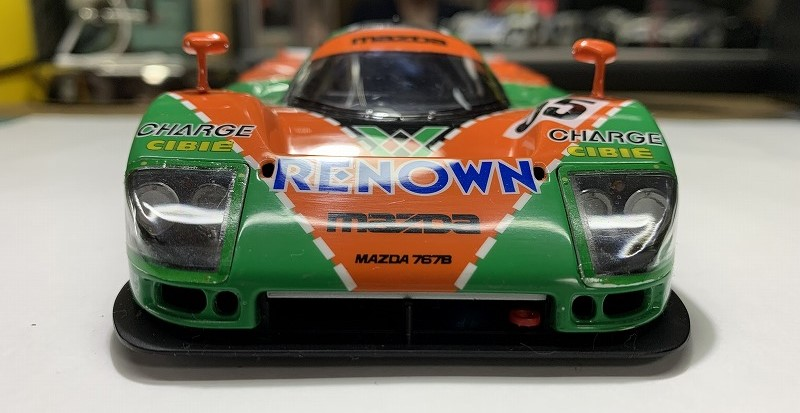

TAMIYA 1/24 Mazda 787b
1991年のル・マン24時間優勝
シャシー と モノコック －１

シャシーの内側（写真で見えている部分）、モノコックを全体的に白で塗装。
シャシー と モノコック －２
室内床周り、タイヤハウス裏はダークグレーで塗装。尚、後輪タイヤハウスは、切断している。
シャシー と モノコック －３

この時点で、室内を現車のように、赤系統で塗装するか悩んだが、白・グレーなど無彩色の単式相の明暗で作製する事とした。
シャシー と モノコック －４
エンジン、サスを取り付ける前の状態で、記念の一枚。尚、エンジン周り、サスペンションは説明書通りの色で塗装。
フルビューボディを組み込んで確認 －１
ホイールを漂白したら、透明パーツであったのはうれしい誤算。サスペンションの赤色が効果的と思うが、どうでしょうか？
フルビューボディを組み込んで確認 －２

フルビューとは云え、やっぱり白いほうが内部は確認し易いですね＾＾；。ホイール周りもよく見えて、この状態で飾ってもＯＫかな？。タイヤはめると見えなくなるし・・・。
フルビューボディを組み込んで確認 －３
なかなかいいんじゃないでしょうか・・・。
フルビューボディを組み込んで確認 －４

フロントのトランク部分がスカスカですね！。どうしようかな・・色付けようかな・・。
パーティングラインも残ってます。ボディを無塗装で完了とするなら、パーティングラインがあってもいいんですがね・・
フルビューボディを組み込んで確認 －５

フロントガラス周りは、塗装した方が、立体感がでるような気がしますが・・。
フルビューボディを組み込んで確認 －６